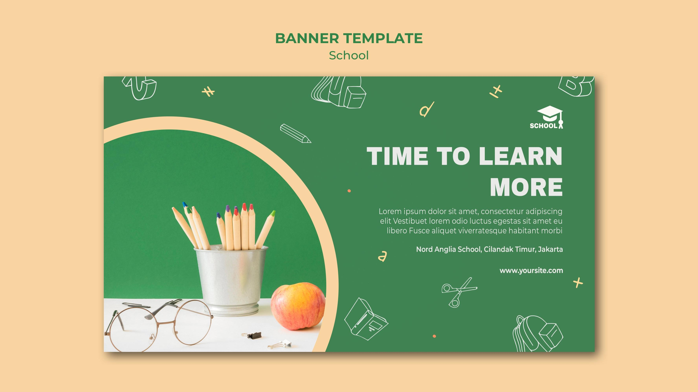
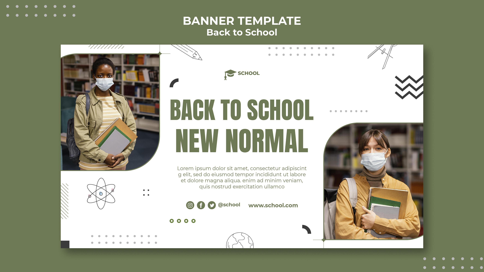
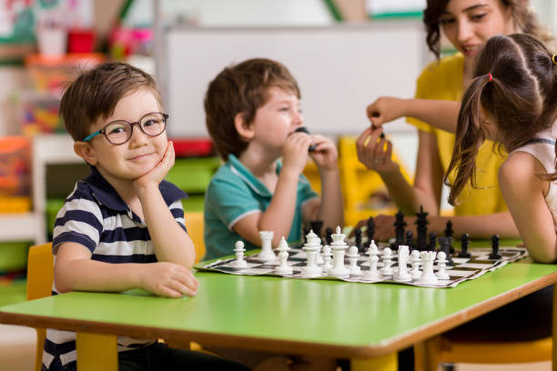
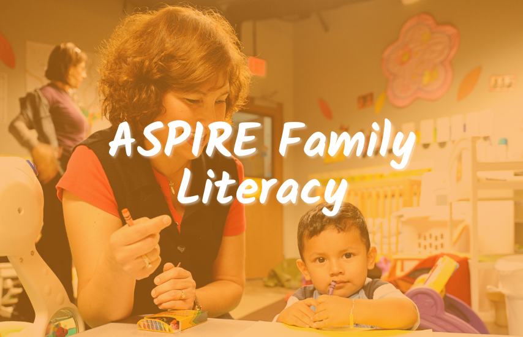
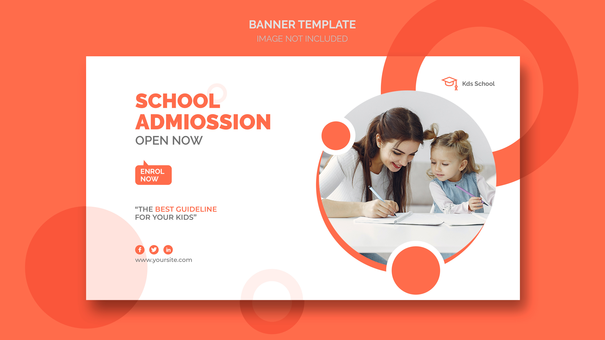

Smart Classrooms
Interactive teaching tools and flexible seating help lessons stay focused, visual, and engaging.
Facilities
From smart classrooms to outdoor activity zones, our campus is designed to support concentration, creativity, collaboration, and healthy student routines every day.
Campus Highlights

Interactive teaching tools and flexible seating help lessons stay focused, visual, and engaging.

Students have access to pastoral support, attentive supervision, and regular family communication.

Playgrounds and activity zones encourage teamwork, fitness, confidence, and school spirit.
Students use digital tools for research, projects, presentations, and collaborative learning tasks.

Quiet study spaces support reading habits, reflection, and focused academic practice.

Arts, events, and club activities give students room to express ideas and build confidence.
Designed for Students
Students move through spaces built for study, movement, performance, and collaboration. The result is a school day that feels organized, energized, and student-friendly.
Our school routines prioritize orderly movement, monitored spaces, and clear communication so students can focus on learning with confidence.
Families value practical campus support that makes the school day smooth and dependable for students across all grade levels.